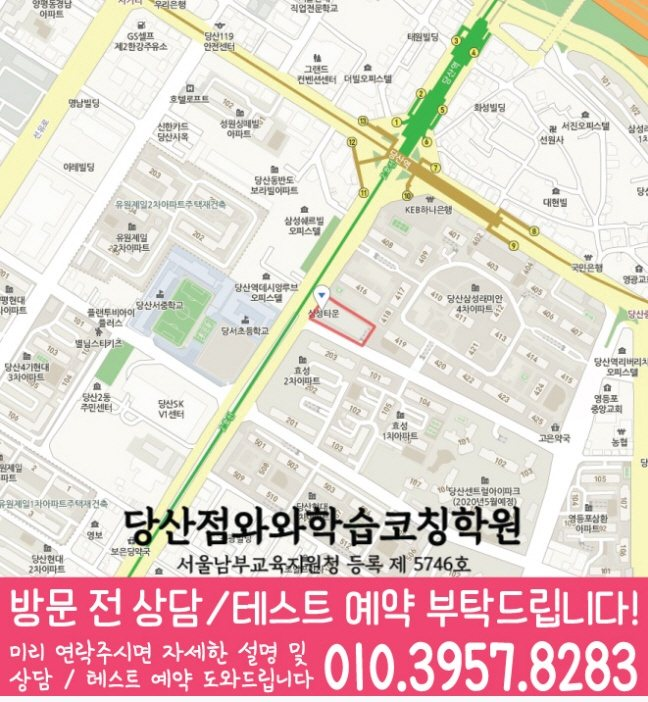

영등포구 방문 정보
페이지 주소 정보는 서울 영등포구 당산로44길 3 삼성타운 504입니다. 현장 안내 ‘당산역 10번 출구, 2호선 지나는 도로 따라 레미안4차 지나면 크로미빵집있는 건물 5층입니다.’를 참고하고 변경 가능성이 있는 방문 시간은 별도로 문의하세요.
WAWA LEARNING COACHING CENTER · 서울 영등포구
와와학습코칭센터 당산점 방문을 준비하는 당산동 학생을 위해 주소, 과목별 학년, 학교 정보와 상담 질문을 분리해 정리했습니다. 현재 운영 내용은 상담 시 확인하세요.


CENTER AT A GLANCE
상담 전에는 와와학습코칭센터 당산점의 위치를 먼저 확정하고 국어·영어·수학 가운데 필요한 과목의 학년 표시를 찾아보세요. 이후 당산동 학생이 받은 학교 시험 자료를 참고 학교 목록과 함께 확인하면 됩니다.
LOCAL SOURCE GUIDE
페이지 주소 정보는 서울 영등포구 당산로44길 3 삼성타운 504입니다. 현장 안내 ‘당산역 10번 출구, 2호선 지나는 도로 따라 레미안4차 지나면 크로미빵집있는 건물 5층입니다.’를 참고하고 변경 가능성이 있는 방문 시간은 별도로 문의하세요.
센터 제공 자료에는 국어는 초3, 초4, 초5, 초6, 중1, 중2, 중3, 고1; 영어는 초3, 초4, 초5, 초6, 중1, 중2, 중3, 고1; 수학은 초3, 초4, 초5, 초6, 중1, 중2, 중3, 고1로 정리되어 있습니다. 이 표시는 반 편성이나 좌석 가능 여부를 뜻하지 않습니다.
기재된 참고 학교 11곳 가운데 당서초, 영동초, 당중초, 당산중, 당산서중, 선유중 외 5곳을 확인할 수 있습니다. 실제 내신 범위는 학생 자료가 우선합니다.
SUBJECT & GRADE
초3, 초4, 초5, 초6, 중1, 중2, 중3, 고1
초3, 초4, 초5, 초6, 중1, 중2, 중3, 고1
초3, 초4, 초5, 초6, 중1, 중2, 중3, 고1
LEARNING FLOW
당산동 학생이 사용하는 교재 목차에 완료·미완료 단원을 표시하고 최근 시험 결과와 비교하면 우선순위를 정하기 쉽습니다.
당서초 평가 일정이 있다면 역산한 주차별 목표와 평소 학습 목표를 분리해 과도한 계획을 피합니다.
개념을 다시 읽은 뒤 곧바로 동일 문제만 풀지 말고 유사 문제와 혼합 문제를 거쳐 적용 여부를 확인합니다.
SCHOOL REFERENCE
표시된 학교는 센터 자료의 참고 항목입니다. 시험 대비 순서는 학생이 받은 교과 진도표, 수행평가 일정, 실제 시험 범위를 확인한 뒤 정해야 합니다.
PARENT CONSULTATION SCENARIO
국어·영어·수학 답안에서 빈 문제와 실수한 문제의 비율이 다르다면 각각 다른 학습 방법이 필요할 수 있습니다. 와와학습코칭센터 당산점 상담을 준비할 때 다음 기준을 함께 보세요. 이런 변화가 필요하다면 최근 답안에서 개념 부족과 실행 부족을 서로 다른 항목으로 표시해 가져가세요.
상담 전에 살펴볼 행동과 기록을 예시로 정리했습니다. 실제 학생의 신원·성적·수강 결과를 담은 내용은 아닙니다.
QUESTIONS & ANSWERS
학교 시험 범위, 수행평가 일정, 과목별 교재, 평소 완료량을 한곳에 정리하세요. 와와학습코칭센터 당산점에 희망 과목과 가능한 요일도 함께 알려 주세요.
공통자료에는 국어 초3, 초4, 초5, 초6, 중1, 중2, 중3, 고1; 영어 초3, 초4, 초5, 초6, 중1, 중2, 중3, 고1; 수학 초3, 초4, 초5, 초6, 중1, 중2, 중3, 고1로 기재되어 있습니다. 페이지의 학년 표시는 확인 출발점이며 실제 수업 시간과 반 구성은 별도 정보입니다.
계획표에는 과목 이름만 쓰지 말고 교재명, 쪽수, 문제 수, 재확인 날짜를 적어야 완료 여부를 판단할 수 있습니다.
빈 문제, 계산이 길어진 문제, 조건을 잘못 읽은 문제를 다른 표시로 구분하세요. 원인마다 필요한 재학습 방법이 다릅니다.
센터 자료에서 확인되는 학교는 당서초, 영동초, 당중초, 당산중, 당산서중, 선유중입니다. 목록은 상담 준비용이며 현재 시간표나 등록 가능성을 뜻하지 않습니다.
상담 전 체크
국어·영어·수학 학습에 쓸 수 있는 요일과 시간을 알려 주면 과도하지 않은 계획을 비교할 수 있습니다.